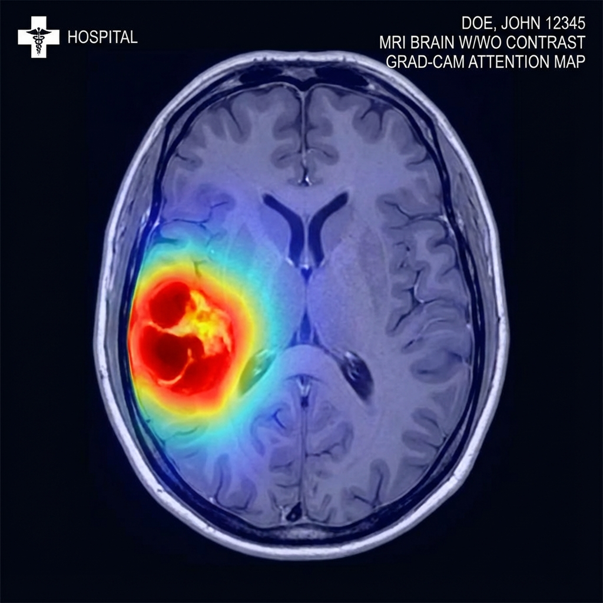

Seeing Inside the Black Box: How Explainable AI Brings Clarity to MRI Brain-Tumor Diagnosis
November 2025 | Category: Medical AI / XAI / Computer Vision

A practical story from building an interpretable MRI classification model
Machine learning in medicine often feels like a paradox. On one hand, modern models can detect subtle patterns in MRI scans with remarkable accuracy. On the other hand, these same models frequently behave like sealed black boxes, offering predictions without any insight into how they reached them. In most fields that might be acceptable—but in medicine, where decisions carry high stakes, an unexplained answer is rarely enough.
This tension between performance and transparency is what motivated me to explore Explainable AI (XAI) in the context of brain-tumor MRI analysis. The goal was simple: build a lightweight model capable of classifying tumors from MRI slices, while also revealing the reasoning behind its decisions in a way clinicians and learners could understand.
You can explore the project here:
👉 https://github.com/mohammadimathstar/BrainTumorApp
Why Accuracy Alone Isn’t Enough
When radiologists or neurologists evaluate an MRI, they don’t look only at whether a tumor exists; they analyze shape, texture, boundaries, asymmetry, and contextual cues from surrounding brain structures. They also rely on years of training and an ability to justify every decision they make.
An AI system, however, might generate a prediction in milliseconds—yet offer no rationale at all. And that creates a serious barrier. If a model rejects a loan, denies an insurance claim, or misdiagnoses a patient, "the computer said so" is not a legally or ethically acceptable answer. Explainable AI fills this gap by transforming opaque predictions into something meaningful. Instead of “black-box classification,” it becomes a visual guide, a reasoning partner, or even a teaching assistant.
Building a Lightweight MRI Classifier
The model I developed focuses on keeping things simple and accessible. Instead of relying on large neural networks that require expensive GPUs or cloud servers, the system uses a compact convolutional architecture that runs efficiently on a CPU. This is not just an engineering choice—it’s also a practical one. Many hospitals, research labs, and educational institutions operate with limited computing resources. A model that is fast, small, and easy to deploy becomes far more useful than one that demands heavy hardware.
But even more important than the architecture itself is the idea of interpretability. With each prediction, the system generates a heatmap using Grad-CAM. These heatmaps highlight the regions of the MRI that contributed most strongly to the classification. When everything works well, the model’s attention gravitates toward the tumor core or its boundaries. When things go wrong and attention drifts toward irrelevant regions, the explanation reveals that too.
How XAI Helps Us Understand MRI Predictions
One of the most valuable aspects of XAI in medical imaging is the trust it builds. When a radiologist sees that the model is attending to the same region they would focus on, confidence naturally increases. When the heatmap reveals an unexpected region, it encourages a closer look and helps detect potential errors or biases in the model.
XAI is also an effective educational tool. Students and junior clinicians often struggle with identifying early-stage tumors or subtle abnormalities. Seeing what the model pays attention to helps them understand imaging patterns they might have overlooked. It becomes a living, interactive supplement to textbooks—something you can explore, adjust, and interrogate.
And beyond trust and education, XAI improves safety. Even high-accuracy models occasionally make questionable predictions. Without explanations, those errors might pass unnoticed. With heatmaps, inconsistencies become obvious. The clinician can quickly see when the model is focusing on noise or artifacts rather than real pathology.
A Closer Look at Grad-CAM
Grad-CAM is one of the most intuitive XAI methods for visual models. After the model makes a decision, Grad-CAM traces back through the network to identify which parts of the image influenced the final classification. The result is a colored overlay that maps attention intensity onto the MRI.
When the explanation aligns with clinical logic—for instance, emphasizing a mass effect, a bright lesion, or a distorted structure—the model’s prediction becomes easier to interpret. When the explanation highlights irrelevant zones, the clinician knows to question the output.
Limitations and Real-World Caveats
No model, no matter how transparent, can replace a trained medical professional. MRI scans vary widely across scanners, orientations, and patient conditions. Tumor boundaries can be ambiguous. Different sequences—T1, T2, FLAIR—offer different insights that a single-slice classifier cannot fully capture.
XAI also has its own limits. A heatmap is just an approximation of where the model “looked,” and sometimes it oversimplifies complex internal reasoning. Even so, having an explanation is vastly more informative than having none.
Where XAI in Medical Imaging Is Heading
The future of medical AI is moving beyond simple heatmaps. We are beginning to see models that combine visual explanations with text-based reasoning, systems that can cross-reference imaging findings with clinical notes, and interactive interfaces that allow radiologists to question or correct the model.
In this broader context, lightweight interpretable models remain important. They’re easier to deploy, easier to audit, and easier to integrate into constrained environments. They also encourage a philosophy of clarity—reminding us that better AI does not always mean bigger AI.
Explore the MRI Tumor Classifier
If you're curious to see how XAI works in practice, the code and interface are available here:
👉 https://github.com/mohammadimathstar/BrainTumorApp
This project demonstrates my commitment to building Responsible AI. I don't just build models that work; I build models that are safe, transparent, and ready for real-world deployment.